## threads | **Concurrency within a Process** ## **operating systems** ### csci 3411 ### Prof. **Sibin Mohan** <br> _<font size="5"> acknowledgments: some content modified from Silberschatz et al. and West</font>_ --- previously, in operating systems... --- - **processes** → unit of execution --- - **processes** → unit of execution - <sc>ipc</sc> → how processes cooperate --- we've been telling you a (small) **lie**... <br> <br> <center><div class="center" data-id="box" style="height: 75px; width: 1010px; background: orange;"> processes don't execute...<b>threads do!</b> </div></center> --- ## threads --- - each process has a **flow of control** --- - each process has a **flow of control** - **sequential** execution through process' code --- ### a thread consists of... --- ### a thread consists of... | component | description | |---|---| | **register state** | incl. instruction counter, stack pointer | --- ### a thread consists of... | component | description | |---|---| | **register state** | incl. instruction counter, stack pointer | | **execution stack** | what stack pointer points into | || --- everything we said about processes and **execution**... --- everything we said about processes and **execution**... was really about **threads**! --- ### a **process is...** - a **virtual address space** --- ### a **process is...** - a **virtual address space** - **one or more** threads --- ### a **process is...** - a **virtual address space** - **one or more** threads <br> <br> <center><div class="center" data-id="box" style="height: 75px; width: 1210px; background: orange;"> until now → <b>exactly one thread per process!</b> </div></center> --- - process can have **multiple** threads --- - process can have **multiple** threads - **multi-threaded** application --- - process can have **multiple** threads - **multi-threaded** application - threads **share** - code, data - process resources (_e.g._ file descriptors) --- - process can have **multiple** threads - **multi-threaded** application - threads **share** - code, data - process resources (_e.g._ file descriptors) - each thread has its **own** - registers - stack --- a **single-threaded** process <p>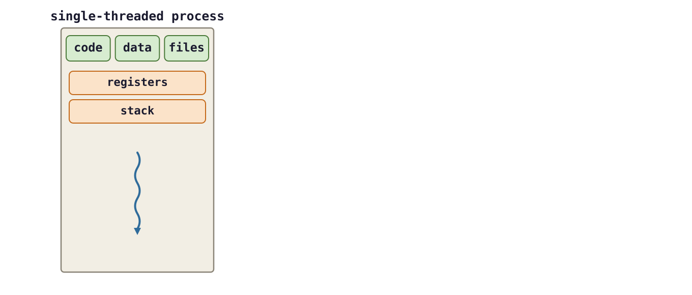</p> --- a **single-threaded** process vs. a **multi-threaded** process <p>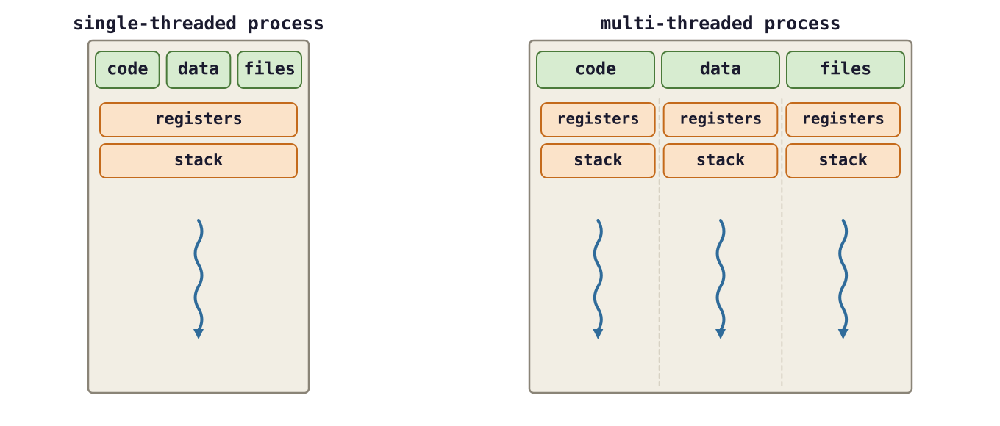</p> --- <div class="multicolumn" style="display: grid; grid-template-columns: 60% 40%; gap: 20px; align-items: center;"> <div> </div> <div> ||| |-----|-----| | **shared** | code, data, files| </div> </div> --- <div class="multicolumn" style="display: grid; grid-template-columns: 60% 40%; gap: 20px; align-items: center;"> <div> </div> <div> ||| |-----|-----| | **shared** | code, data, files| | **private** | registers, stack | || </div> </div> --- but... isn't a stack just **memory** in the VAS? --- but... isn't a stack just **memory** in the VAS? ## **yes!** --- ### threads | **stacks in one VAS** - each thread's stack → **different place** in **same** VAS --- ### threads | **stacks in one VAS** - each thread's stack → **different place** in **same** VAS <p>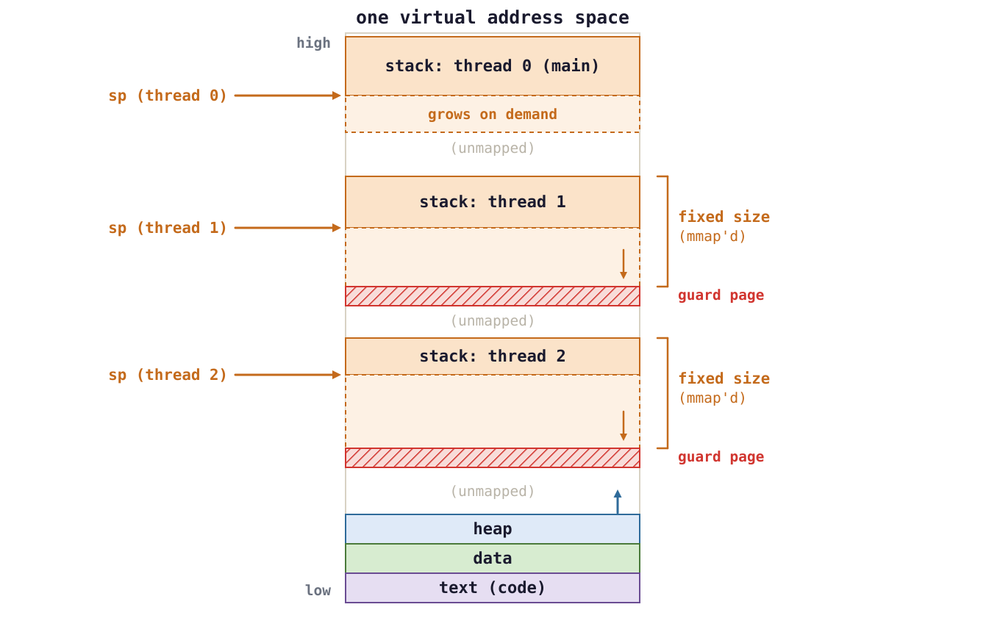</p> --- ### stacks in one VAS <div class="multicolumn" style="display: grid; grid-template-columns: 40% 60%; gap: 20px; align-items: center;"> <div> </div> <div> - each thread → **own** stack pointer (<scb>sp</scb>) </div> </div> --- ### stacks in one VAS <div class="multicolumn" style="display: grid; grid-template-columns: 40% 60%; gap: 20px; align-items: center;"> <div> </div> <div> - each thread → **own** stack pointer (<scb>sp</scb>) - each stack → **separate** region <br> (<scb>mmap</scb>'d by <scb>pthread_create</scb>) </div> </div> --- ### stacks in one VAS <div class="multicolumn" style="display: grid; grid-template-columns: 40% 60%; gap: 20px; align-items: center;"> <div> </div> <div> - each thread → **own** stack pointer (<scb>sp</scb>) - each stack → **separate** region <br> (<scb>mmap</scb>'d by <scb>pthread_create</scb>) - **fixed size** <br> (default <scb>ulimit -s</scb>, typically <scb>8 MiB</scb>) </div> </div> --- ### stacks in one VAS <div class="multicolumn" style="display: grid; grid-template-columns: 40% 60%; gap: 20px; align-items: center;"> <div> </div> <div> - each thread → **own** stack pointer (<scb>sp</scb>) - each stack → **separate** region <br> (<scb>mmap</scb>'d by <scb>pthread_create</scb>) - **fixed size** <br> (default <scb>ulimit -s</scb>, typically <scb>8 MiB</scb>) - grows **down** within its region </div> </div> --- ### stacks in one VAS <div class="multicolumn" style="display: grid; grid-template-columns: 40% 60%; gap: 20px; align-items: center;"> <div> </div> <div> - each thread → **own** stack pointer (<scb>sp</scb>) - each stack → **separate** region <br> (<scb>mmap</scb>'d by <scb>pthread_create</scb>) - **fixed size** <br> (default <scb>ulimit -s</scb>, typically <scb>8 MiB</scb>) - grows **down** within its region - main thread stack → grows **on demand** </div> </div> --- are thread stacks **contiguous** in memory? --- are thread stacks **contiguous** in memory? ## **no!** --- are thread stacks **contiguous** in memory? **no!** - **unmapped** gaps between them --- are thread stacks **contiguous** in memory? **no!** - **unmapped** gaps between them - each has a **guard page** at its low end --- ### stacks in one VAS | **overflow** a thread's stack overflows → hits its **guard page** <p>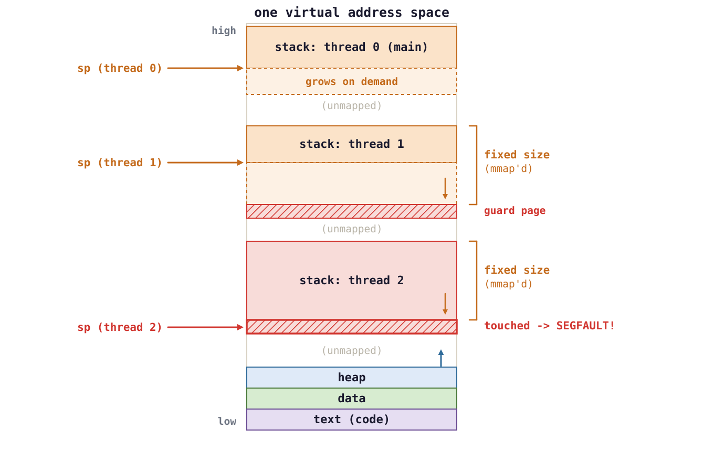</p> --- ### stacks in one VAS | **overflow** <div class="multicolumn" style="display: grid; grid-template-columns: 40% 60%; gap: 20px; align-items: center;"> <div> </div> <div> - guard page → **unmapped** (no access) </div> </div> --- ### stacks in one VAS | **overflow** <div class="multicolumn" style="display: grid; grid-template-columns: 40% 60%; gap: 20px; align-items: center;"> <div> </div> <div> - guard page → **unmapped** (no access) - overflow → **segfault** - not silent corruption of another stack! </div> </div> --- can one thread **touch** another thread's stack? --- can one thread **touch** another thread's stack? ## **yes!** --- ### stacks in one VAS | **no protection** - **same** VAS --- ### stacks in one VAS | **no protection** - **same** VAS - **no** protection between threads --- ### stacks in one VAS | **no protection** - **same** VAS - **no protection** between threads - stray pointer in one thread --- ### stacks in one VAS | **no protection** - **same** VAS - **no protection** between threads - stray pointer in one thread - can corrupt **another's** stack --- threads **share all data**... --- threads **share all data**... what could go **wrong**? --- ### sharing threads **share all data**... what could go **wrong**? - sharing between threads → **trivial** <br> (as opposed to <scb>fork</scb>/<sc>ipc</sc>) --- ### sharing threads **share all data**... what could go **wrong**? - sharing between threads → **trivial** <br> (as opposed to <scb>fork</scb>/<sc>ipc</sc>) - but threads can touch **same data**... --- ### sharing threads **share all data**... what could go **wrong**? - sharing between threads → **trivial** <br> (as opposed to <scb>fork</scb>/<sc>ipc</sc>) - but threads can touch **same data**... - ...at the **same time**! [synchronization → <b>next topic!</b>] --- let's look at a `code` example using <scb>pthreads</scb> (Linux) --- ```C #include <pthread.h> #include <stdio.h> int counter = 0; // shared: global data void *worker(void *arg) { int id = *(int *)arg; // private: on this thread's stack for (int i = 0; i < 1000000; i++) counter++; // no synchronization! printf("thread %d done\n", id); return NULL; } int main(void) { pthread_t t[2]; int ids[2] = {0, 1}; for (int i = 0; i < 2; i++) pthread_create(&t[i], NULL, worker, &ids[i]); for (int i = 0; i < 2; i++) pthread_join(t[i], NULL); printf("counter = %d\n", counter); return 0; } ``` --- ```C [4|6|7|8-9|18|20|21] #include <pthread.h> #include <stdio.h> int counter = 0; // shared: global data void *worker(void *arg) { int id = *(int *)arg; // private: on this thread's stack for (int i = 0; i < 1000000; i++) counter++; // no synchronization! printf("thread %d done\n", id); return NULL; } int main(void) { pthread_t t[2]; int ids[2] = {0, 1}; for (int i = 0; i < 2; i++) pthread_create(&t[i], NULL, worker, &ids[i]); for (int i = 0; i < 2; i++) pthread_join(t[i], NULL); printf("counter = %d\n", counter); return 0; } ``` --- ```C #include <pthread.h> #include <stdio.h> int counter = 0; // shared: global data void *worker(void *arg) { int id = *(int *)arg; // private: on this thread's stack for (int i = 0; i < 1000000; i++) counter++; // no synchronization! printf("thread %d done\n", id); return NULL; } int main(void) { pthread_t t[2]; int ids[2] = {0, 1}; for (int i = 0; i < 2; i++) pthread_create(&t[i], NULL, worker, &ids[i]); for (int i = 0; i < 2; i++) pthread_join(t[i], NULL); printf("counter = %d\n", counter); return 0; } ``` --- ### <scb>pthreads</scb> | **what's shared?** --- ### <scb>pthreads</scb> | **what's shared?** | variable | where | shared? | |---|---|---| | <scb>counter</scb> | global **data** | **yes** <br> all threads | --- ### <scb>pthreads</scb> | **what's shared?** | variable | where | shared? | |---|---|---| | <scb>counter</scb> | global **data** | **yes** <br> all threads | | <scb>id</scb>, <scb>i</scb> | each thread's **stack** | no <br> private | --- ### <scb>pthreads</scb> | **what's shared?** | variable | where | shared? | |---|---|---| | <scb>counter</scb> | global **data** | **yes** <br> all threads | | <scb>id</scb>, <scb>i</scb> | each thread's **stack** | no <br> private | | <scb>worker()</scb> | **text** (code) | yes | || --- what should be the output of <scb>counter</scb> at the end? ```C void *worker(void *arg) { int id = *(int *)arg; // private: on this thread's stack for (int i = 0; i < 1000000; i++) counter++; // no synchronization! printf("thread %d done\n", id); return NULL; } ``` remember we have <scb>2</scb> threads running --- expected output → <scb>counter = 2000000</scb>? --- ### <scb>pthreads</scb> | **output** expected output → <scb>counter = 2000000</scb>? ``` $ gcc -pthread -o count count.c $ ./count thread 0 done thread 1 done counter = 1028607 $ ./count ... counter = 1021443 ``` --- ### <scb>pthreads</scb> | **output** expected output → <scb>counter = 2000000</scb>? ``` $ gcc -pthread -o count count.c $ ./count thread 0 done thread 1 done counter = 1028607 $ ./count ... counter = 1021443 ``` - exact number → changes **every run** --- ### <scb>pthreads</scb> | **output** expected output → <scb>counter = 2000000</scb>? ``` $ gcc -pthread -o count count.c $ ./count thread 0 done thread 1 done counter = 1028607 $ ./count ... counter = 1021443 ``` - exact number → changes **every run** <br> <center><div class="center" data-id="box" style="height: 75px; width: 860px; background: orange;"> updates lost → <b>a race condition!</b> </div></center> Note: - actual runs on an 8-core Linux box. --- why are updates **lost**? --- ### why lost? 1. <scb>counter++</scb> → **three** steps --- ### why lost? 1. <scb>counter++</scb> → **three** steps 1. **load** --- ### why lost? 1. <scb>counter++</scb> → **three** steps 1. **load** 2. **add** --- ### why lost? 1. <scb>counter++</scb> → **three** steps 1. **load** 2. **add** 3. **store** --- ### why lost? 1. <scb>counter++</scb> → **three** steps 1. **load** 2. **add** 3. **store** 2. both threads **load** same value --- ### why lost? 1. <scb>counter++</scb> → **three** steps 1. **load** 2. **add** 3. **store** 2. both threads **load** same value 3. both **store** value + 1 --- ### why lost? 1. <scb>counter++</scb> → **three** steps 1. **load** 2. **add** 3. **store** 2. both threads **load** same value 3. both **store** value + 1 4. one increment **disappears**! --- ### processes vs. threads | **API** | processes | threads (<scb>pthreads</scb>) | |---|---| | <scb>fork()</scb> | <scb>pthread_create()</scb> | --- ### processes vs. threads | **API** | processes | threads (<scb>pthreads</scb>) | |---|---| | <scb>fork()</scb> | <scb>pthread_create()</scb> | | <scb>wait()</scb> | <scb>pthread_join()</scb> | --- ### processes vs. threads | **API** | processes | threads (<scb>pthreads</scb>) | |---|---| | <scb>fork()</scb> | <scb>pthread_create()</scb> | | <scb>wait()</scb> | <scb>pthread_join()</scb> | | <scb>exit()</scb> | <scb>pthread_exit()</scb> | --- ### processes vs. threads | **API** | processes | threads (<scb>pthreads</scb>) | |---|---| | <scb>fork()</scb> | <scb>pthread_create()</scb> | | <scb>wait()</scb> | <scb>pthread_join()</scb> | | <scb>exit()</scb> | <scb>pthread_exit()</scb> | | **separate** VAS | **shared** VAS | || --- ### processes vs. threads | **API** | processes | threads (<scb>pthreads</scb>) | |---|---| | <scb>fork()</scb> | <scb>pthread_create()</scb> | | <scb>wait()</scb> | <scb>pthread_join()</scb> | | <scb>exit()</scb> | <scb>pthread_exit()</scb> | | **separate** VAS | **shared** VAS | || <br> more → [pthreads(7)](https://man7.org/linux/man-pages/man7/pthreads.7.html) --- ## context switches | **revisited** --- - context switch → save/restore **registers** --- - context switch → save/restore **registers** - that's a **thread's** **<font color="darkred">state</font>**! --- - context switch → save/restore **registers** - that's a **thread's** **<font color="darkred">state</font>**! - switching between **processes** → **also** switch VAS --- - context switch → save/restore **registers** - that's a **thread's** **<font color="darkred">state</font>**! - switching between **processes** → **also** switch VAS - threads in **same** process → **no** VAS switch --- - context switch → save/restore **registers** - that's a **thread's** **<font color="darkred">state</font>**! - switching between **processes** → **also** switch VAS - threads in **same** process → **no** VAS switch - **faster**! --- switch from <scb>A</scb> → <scb>B</scb>... what's **involved**? --- ### switching processes switch from <scb>A</scb> → <scb>B</scb>... what's **involved**? <p>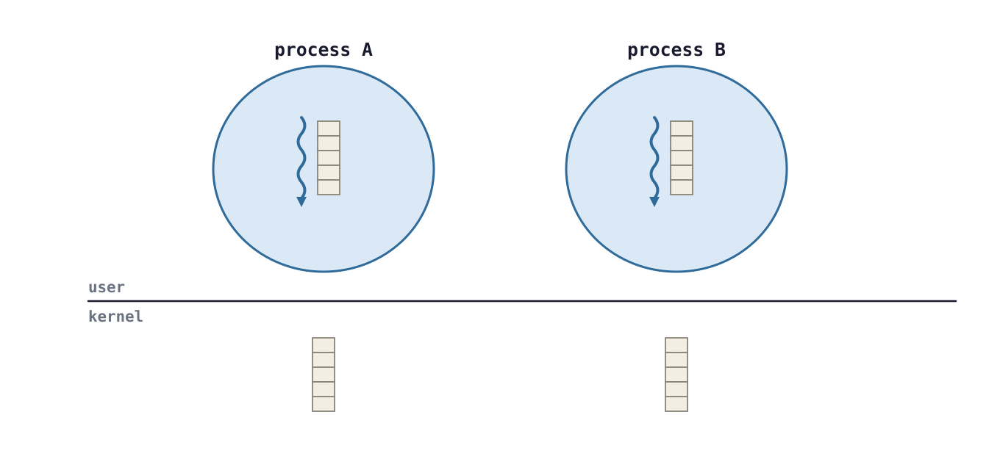</p> --- ### switching processes <sc>syscall</sc>, **thread switch** and **VAS switch** <p>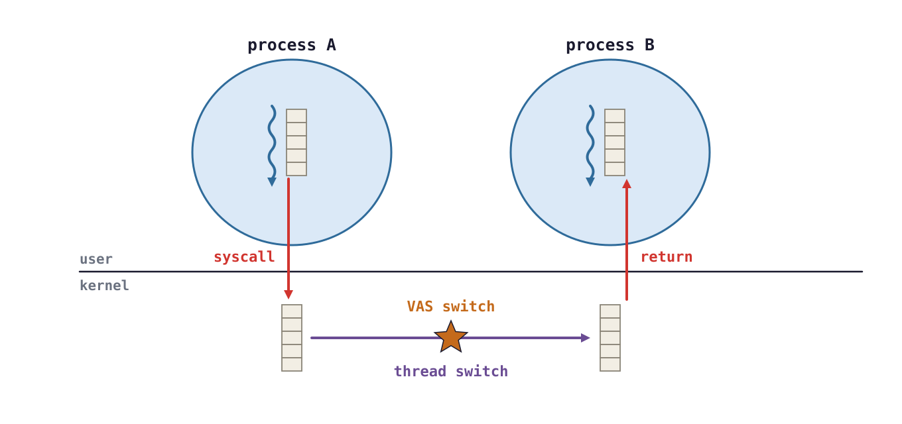</p> --- ### switching processes each "atom" has a **cost** <p>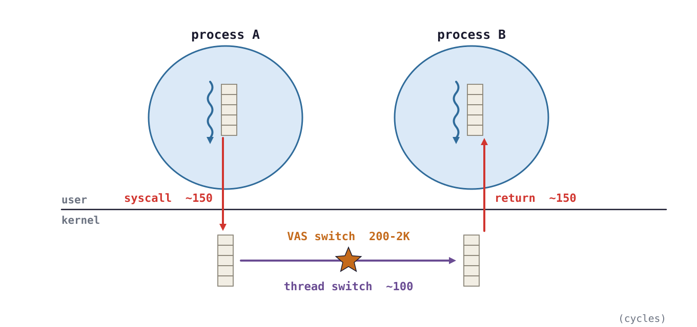</p> --- ### atoms | atom | cost (cycles) | |---|---| | <sc>syscall</sc> (+ return) | ~<scb>150</scb> | --- ### atoms | atom | cost (cycles) | |---|---| | <sc>syscall</sc> (+ return) | ~<scb>150</scb> | | thread switch | ~<scb>100</scb> | --- ### atoms | atom | cost (cycles) | |---|---| | <sc>syscall</sc> (+ return) | ~<scb>150</scb> | | thread switch | ~<scb>100</scb> | | VAS switch | ~<scb>200</scb>-<scb>2,000</scb> | || --- which atoms can we **avoid**? --- ## implementing threads --- ### three types --- ### three types | type | scheduled by | runs at | |---|---|---| | **one-to-one** (user-kernel) | kernel | user level <br> (+ kernel via <sc>syscall</sc>s) | --- ### three types | type | scheduled by | runs at | |---|---|---| | **one-to-one** (user-kernel) | kernel | user level <br> (+ kernel via <sc>syscall</sc>s) | | **kernel** threads | kernel | kernel **only** | --- ### three types | type | scheduled by | runs at | |---|---|---| | **one-to-one** (user-kernel) | kernel | user level <br> (+ kernel via <sc>syscall</sc>s) | | **kernel** threads | kernel | kernel **only** | | **user** threads (<scb>m:1</scb>) | process itself | user level **only** | || --- ## one-to-one | **user-kernel threads** --- ### one-to-one - scheduled by **kernel** --- ### one-to-one - scheduled by **kernel** - execute at user level --- ### one-to-one - scheduled by **kernel** - execute at user level - make <sc>syscall</sc>s into kernel --- ### one-to-one - scheduled by **kernel** - execute at user level - make <sc>syscall</sc>s into kernel - each thread → **backed** by kernel thread --- ### one-to-one - scheduled by **kernel** - execute at user level - make <sc>syscall</sc>s into kernel - each thread → **backed** by kernel thread - kernel blocks/context-switches it --- ### one-to-one 1. thread **blocks** (<sc>syscall</sc>) --- ### one-to-one 1. thread **blocks** (<sc>syscall</sc>) 2. kernel switches to **another thread** in same process --- ### one-to-one 1. thread **blocks** (<sc>syscall</sc>) 2. kernel switches to **another thread** in same process <p>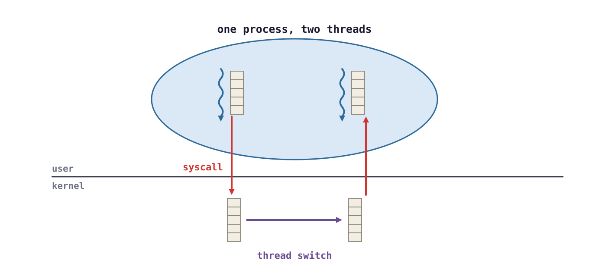</p> --- ### one-to-one <div class="multicolumn" style="display: grid; grid-template-columns: 40% 60%; gap: 20px; align-items: center;"> <div> </div> <div> | thread | state change | | --- | --- | | blocked thread | <scb>running</scb> → <scb>blocked</scb> | | other thread | <scb>ready</scb> → <scb>running</scb> | || </div> </div> --- atoms **involved**? --- ### one-to-one | **atoms** <p>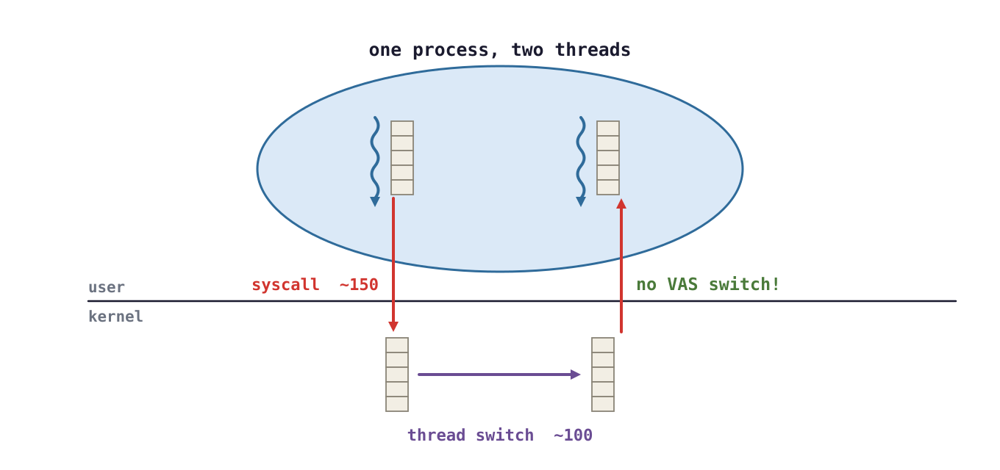</p> --- ### one-to-one | **atoms** <div class="multicolumn" style="display: grid; grid-template-columns: 40% 60%; gap: 20px; align-items: center;"> <div> </div> <div> ||| | --- | --- | | <sc>syscall</sc> | **yes** | || </div> </div> --- ### one-to-one | **atoms** <div class="multicolumn" style="display: grid; grid-template-columns: 40% 60%; gap: 20px; align-items: center;"> <div> </div> <div> ||| | --- | --- | | <sc>syscall</sc> | **yes** | | thread switch | **yes** | || </div> </div> --- ### one-to-one | **atoms** <div class="multicolumn" style="display: grid; grid-template-columns: 40% 60%; gap: 20px; align-items: center;"> <div> </div> <div> ||| | --- | --- | | <sc>syscall</sc> | **yes** | | thread switch | **yes** | | VAS switch | **no**! <br> [same process!] | || </div> </div> --- ### one-to-one | **atoms** <div class="multicolumn" style="display: grid; grid-template-columns: 40% 60%; gap: 20px; align-items: center;"> <div> </div> <div> ||| | --- | --- | | <sc>syscall</sc> | **yes** | | thread switch | **yes** | | VAS switch | **no**! <br> [same process!] | || </div> </div> <br> cheaper than a process switch! --- but... threads in **different** processes? --- but... threads in **different** processes? back to heavyweight **VAS switch**! --- ### new abstractions can cause **friction** --- now, consider... --- now, consider... 1. create <scb>N</scb> threads, and then --- now, consider... 1. create <scb>N</scb> threads, and then 2. <scb>fork()</scb> process? --- thread calls <scb>fork()</scb>... what does the **child** get? <p>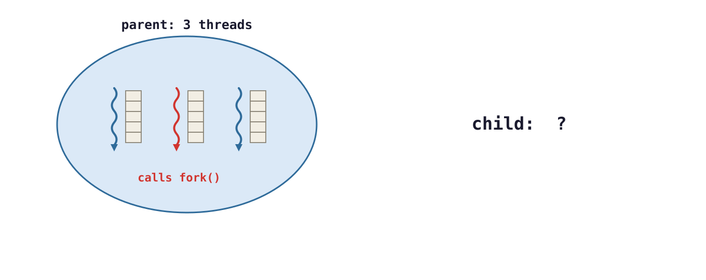</p> --- what does the **child** get? ## **only the calling thread!** --- ### <scb>fork()</scb> + threads POSIX → child gets **only calling thread** <p>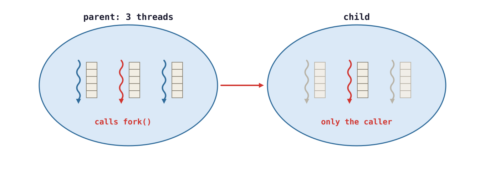</p> --- ### see [fork(2)](https://man7.org/linux/man-pages/man2/fork.2.html): <div class="multicolumn" style="display: grid; grid-template-columns: 40% 60%; gap: 20px; align-items: center;"> <div> </div> <code>"the child process is created with a single thread — the one that called fork()"</code> </div> --- ### <scb>fork()</scb> + threads - other threads **vanish** in child --- ### <scb>fork()</scb> + threads - other threads **vanish** in child <br>...but their **memory is copied** --- ### <scb>fork()</scb> + threads - other threads **vanish** in child <br>...but their **memory is copied** - _e.g._ a **lock** one of them held → stays locked forever! --- ### <scb>fork()</scb> + threads - other threads **vanish** in child <br>...but their **memory is copied** - _e.g._ a **lock** one of them held → stays locked forever! - safe pattern → <scb>fork()</scb> --- ### <scb>fork()</scb> + threads - other threads **vanish** in child <br>...but their **memory is copied** - _e.g._ a **lock** one of them held → stays locked forever! - safe pattern → <scb>fork()</scb> → **immediate** <scb>exec()</scb> --- ### <scb>fork()</scb> + threads - other threads **vanish** in child <br>...but their **memory is copied** - _e.g._ a **lock** one of them held → stays locked forever! - safe pattern → <scb>fork()</scb> → **immediate** <scb>exec()</scb> - [<scb>pthread_atfork()</scb>](https://man7.org/linux/man-pages/man3/pthread_atfork.3.html) → exists to patch this up --- ### <scb>fork()</scb> + threads - other threads **vanish** in child <br>...but their **memory is copied** - _e.g._ a **lock** one of them held → stays locked forever! - safe pattern → <scb>fork()</scb> → **immediate** <scb>exec()</scb> - [<scb>pthread_atfork()</scb>](https://man7.org/linux/man-pages/man3/pthread_atfork.3.html) → exists to patch this up <br> <br> ### more **friction**! --- ## kernel threads --- ### kernel threads - scheduled by **kernel** --- ### kernel threads - scheduled by **kernel** - execute **only** in kernel! --- ### kernel threads - scheduled by **kernel** - execute **only** in kernel! - no <sc>syscall</sc> return... --- ### kernel threads - scheduled by **kernel** - execute **only** in kernel! - no <sc>syscall</sc> return... - each has its **own** execution state --- ### kernel threads - scheduled by **kernel** - execute **only** in kernel! - no <sc>syscall</sc> return... - each has its **own** execution state - <scb>blocked</scb>, <scb>ready</scb>, <scb>running</scb> --- ### kernel threads - scheduled by **kernel** - execute **only** in kernel! - no <sc>syscall</sc> return... - each has its **own** execution state - <scb>blocked</scb>, <scb>ready</scb>, <scb>running</scb> - migrates between → system queues (<scb>run</scb>, <scb>I/O</scb>) --- live **below** the user/kernel line <p>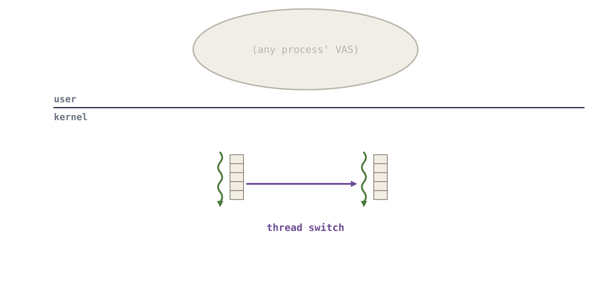</p> --- atoms **involved**? <p>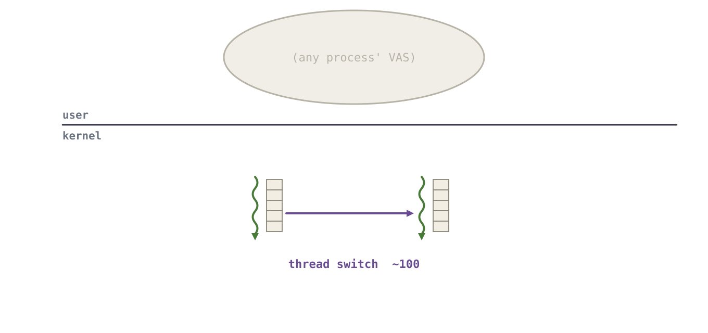</p> --- atoms **involved**? <br> just a **thread switch**! --- why are kernel threads so **fast**? --- ### kernel threads | **why fast?** - kernel mapped into **every** VAS --- ### kernel threads | **why fast?** - kernel mapped into **every** VAS - switching to kernel thread → **never** needs VAS switch --- ### kernel threads | **why fast?** - kernel mapped into **every** VAS - switching to kernel thread → **never** needs VAS switch - just swap **registers**! --- ### kernel threads | **examples** usually an **infinite loop** in kernel --- ### kernel threads | **examples** usually an **infinite loop** in kernel 1. wake up --- ### kernel threads | **examples** usually an **infinite loop** in kernel 1. wake up 2. do work --- ### kernel threads | **examples** usually an **infinite loop** in kernel 1. wake up 2. do work 3. sleep --- ### kernel threads | **examples** usually an **infinite loop** in kernel <br> <div class="multicolumn" style="display: grid; grid-template-columns: 30% 70%; gap: 20px; align-items: center;"> <div> 1. wake up 2. do work 3. sleep </div> <div> examples: - periodic **re-sending** failed network packets </div> </div> --- ### kernel threads | **examples** usually an **infinite loop** in kernel <br> <div class="multicolumn" style="display: grid; grid-template-columns: 30% 70%; gap: 20px; align-items: center;"> <div> 1. wake up 2. do work 3. sleep </div> <div> examples: - periodic **re-sending** failed network packets - **scheduler** itself... </div> </div> --- let's look at <scb>xv6</scb> (x86)... <scb>proc.c</scb> --- ### <scb>xv6</scb> | **scheduler → kernel thread** --- ### <scb>xv6</scb> | **scheduler → kernel thread** ```C void scheduler(void) { struct proc *p; struct cpu *c = mycpu(); c->proc = 0; for(;;){ // Enable interrupts on this processor. sti(); // Loop over process table looking for process to run. acquire(&ptable.lock); for(p = ptable.proc; p < &ptable.proc[NPROC]; p++){ if(p->state != RUNNABLE) continue; ... c->proc = p; switchuvm(p); p->state = RUNNING; swtch(&(c->scheduler), p->context); switchkvm(); ... c->proc = 0; } release(&ptable.lock); } } ``` --- ### <scb>xv6</scb> | **scheduler → kernel thread** ```C [8|10|13|14|15|19-20|22|23|27] void scheduler(void) { struct proc *p; struct cpu *c = mycpu(); c->proc = 0; for(;;){ // Enable interrupts on this processor. sti(); // Loop over process table looking for process to run. acquire(&ptable.lock); for(p = ptable.proc; p < &ptable.proc[NPROC]; p++){ if(p->state != RUNNABLE) continue; ... c->proc = p; switchuvm(p); p->state = RUNNING; swtch(&(c->scheduler), p->context); switchkvm(); ... c->proc = 0; } release(&ptable.lock); } } ``` --- ### <scb>xv6</scb> | **scheduler → kernel thread** ```C void scheduler(void) { struct proc *p; struct cpu *c = mycpu(); c->proc = 0; for(;;){ // Enable interrupts on this processor. sti(); // Loop over process table looking for process to run. acquire(&ptable.lock); for(p = ptable.proc; p < &ptable.proc[NPROC]; p++){ if(p->state != RUNNABLE) continue; ... c->proc = p; switchuvm(p); p->state = RUNNING; swtch(&(c->scheduler), p->context); switchkvm(); ... c->proc = 0; } release(&ptable.lock); } } ``` --- ### <scb>xv6</scb> | **scheduler** details - <scb>for(;;)</scb> → **infinite loop** in kernel --- ### <scb>xv6</scb> | **scheduler** details - <scb>for(;;)</scb> → **infinite loop** in kernel - picks <scb>RUNNABLE</scb> process from <scb>ptable</scb> --- ### <scb>xv6</scb> | **scheduler** details - <scb>for(;;)</scb> → **infinite loop** in kernel - picks <scb>RUNNABLE</scb> process from <scb>ptable</scb> - <scb>switchuvm(p)</scb> → switch to process' **VAS** <br> (+ kernel stack) --- ### <scb>xv6</scb> | **scheduler** details - <scb>for(;;)</scb> → **infinite loop** in kernel - picks <scb>RUNNABLE</scb> process from <scb>ptable</scb> - <scb>switchuvm(p)</scb> → switch to process' **VAS** <br> (+ kernel stack) - <scb>swtch()</scb> → **thread switch** <br> scheduler → process --- ### <scb>xv6</scb> | **scheduler** details - <scb>for(;;)</scb> → **infinite loop** in kernel - picks <scb>RUNNABLE</scb> process from <scb>ptable</scb> - <scb>switchuvm(p)</scb> → switch to process' **VAS** <br> (+ kernel stack) - <scb>swtch()</scb> → **thread switch** <br> scheduler → process - back here? --- ### <scb>xv6</scb> | **scheduler** details - <scb>for(;;)</scb> → **infinite loop** in kernel - picks <scb>RUNNABLE</scb> process from <scb>ptable</scb> - <scb>switchuvm(p)</scb> → switch to process' **VAS** <br> (+ kernel stack) - <scb>swtch()</scb> → **thread switch** <br> scheduler → process - back here? - <scb>switchkvm()</scb> → kernel-only page table --- <scb>proc.h</scb> ```C [3|6] struct cpu { uchar apicid; // Local APIC ID struct context *scheduler; // swtch() here to enter scheduler struct taskstate ts; // Used by x86 to find stack for interrupt ... struct proc *proc; // The process running on this cpu or null }; ``` --- <scb>proc.h</scb> ```C struct cpu { uchar apicid; // Local APIC ID struct context *scheduler; // swtch() here to enter scheduler struct taskstate ts; // Used by x86 to find stack for interrupt ... struct proc *proc; // The process running on this cpu or null }; ``` - one scheduler thread **per CPU** - its saved registers → <scb>c->scheduler</scb> --- ok, we have switched from scheduler → process... --- ok, we have switched from scheduler → process... ...but need to switch **back** from process → scheduler --- way **back** → <scb>sched()</scb> --- ### <scb>xv6</scb> | **back to scheduler** <scb>proc.c</scb> - process gives up CPU - <scb>swtch()</scb> into **scheduler thread** ```C [6] void sched(void) { ... intena = mycpu()->intena; swtch(&p->context, mycpu()->scheduler); mycpu()->intena = intena; } ``` --- ### <scb>xv6</scb> | **threads** ||| | --- | --- | | threads per process | exactly **one** | --- ### <scb>xv6</scb> | **threads** ||| | --- | --- | | threads per process | exactly **one** <br> (kernel stack + <scb>p->context</scb>) | --- ### <scb>xv6</scb> | **threads** ||| | --- | --- | | threads per process | exactly **one** <br> (kernel stack + <scb>p->context</scb>) | | kernel threads | one **scheduler** per CPU | --- ### <scb>xv6</scb> | **threads** ||| | --- | --- | | threads per process | exactly **one** <br> (kernel stack + <scb>p->context</scb>) | | kernel threads | one **scheduler** per CPU <br> (<scb>c->scheduler</scb>) | --- ### <scb>xv6</scb> | **threads** ||| | --- | --- | | threads per process | exactly **one** <br> (kernel stack + <scb>p->context</scb>) | | kernel threads | one **scheduler** per CPU <br> (<scb>c->scheduler</scb>) | | switch | <scb>swtch()</scb> (<scb>swtch.S</scb>) | --- ### <scb>xv6</scb> | **threads** ||| | --- | --- | | threads per process | exactly **one** <br> (kernel stack + <scb>p->context</scb>) | | kernel threads | one **scheduler** per CPU <br> (<scb>c->scheduler</scb>) | | switch | <scb>swtch()</scb> (<scb>swtch.S</scb>) <br> process thread ↔ scheduler thread | || --- ## user threads --- ### user threads - kernel is **unaware** of their existence --- ### user threads - kernel is **unaware** of their existence - **cooperative** switching between threads --- ### user threads - kernel is **unaware** of their existence - **cooperative** switching between threads - threads must <scb>yield()</scb> → **allow** others to execute --- ### user threads - kernel is **unaware** of their existence - **cooperative** switching between threads - threads must <scb>yield()</scb> → **allow** others to execute - context switches → **lightning fast**! --- ### user threads - kernel is **unaware** of their existence - **cooperative** switching between threads - threads must <scb>yield()</scb> → **allow** others to execute - context switches → **lightning fast**! - no mode switch into kernel --- - many threads at user level... **one** thread in kernel <p>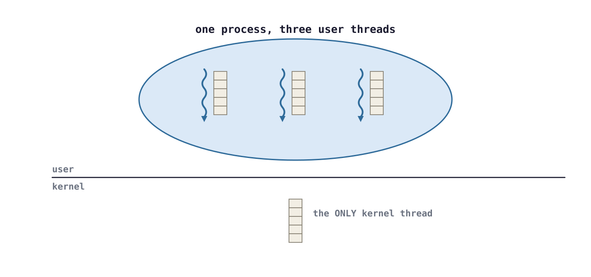</p> --- - many threads at user level... **one** thread in kernel - switch → save/restore registers <p>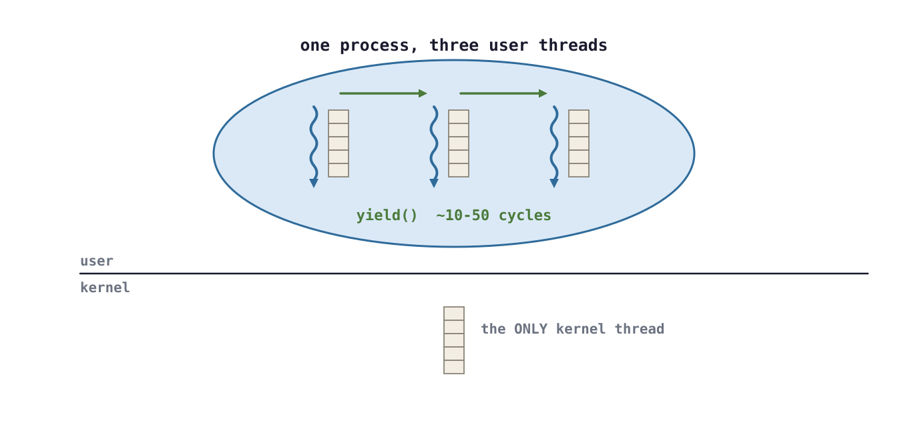</p> --- - many threads at user level... **one** thread in kernel - switch → save/restore registers - **no** sensitive instructions → can **run at user level**! --- why must user threads be **cooperative**? --- ### user threads | **why cooperative?** - preemption needs **interrupts** (_e.g._ timer) --- ### user threads | **why cooperative?** - preemption needs **interrupts** (_e.g._ timer) - interrupts go to **kernel**... --- ### user threads | **why cooperative?** - preemption needs **interrupts** (_e.g._ timer) - interrupts go to **kernel** → sees only **one** thread --- ### user threads | **why cooperative?** - preemption needs **interrupts** (_e.g._ timer) - interrupts go to **kernel** → sees only **one** thread - can't switch between them --- what lets **kernel** threads be preemptive? --- what lets **kernel** threads be preemptive? ## **timer interrupt!** --- what happens when one user thread does **blocking I/O**? --- one thread makes a blocking <sc>syscall</sc>... <p>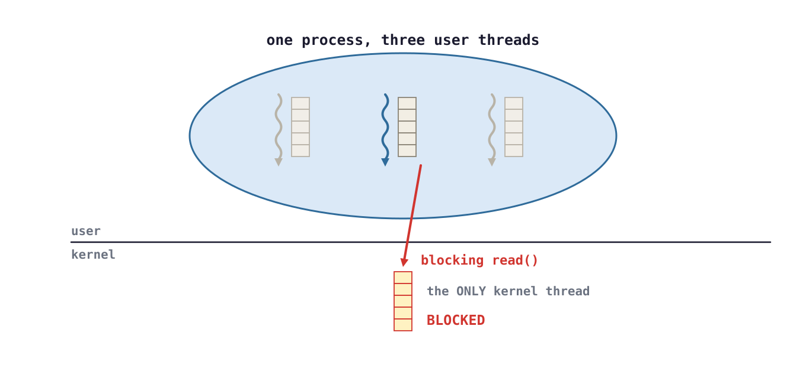</p> --- one thread makes a blocking <sc>syscall</sc>... <br> <br> <center><div class="center" data-id="box" style="height: 75px; width: 810px; background: orange;"> ...and <b>ALL user threads block!</b> </div></center> --- do user threads support **parallelism**? --- do user threads support **parallelism**? ## **no!** --- ### user threads | **parallelism?** - one kernel thread → runs on **one** core at a time --- ### user threads | **pros**/**cons** | pros | | |---|---| | switch → **~10-50 cycles** | | --- ### user threads | **pros**/**cons** | pros | | |---|---| | switch → **~10-50 cycles** | | | **no** <sc>syscall</sc>, **no** mode switch | | --- but...what's the **catch**? --- ### user threads | **pros**/**cons** | pros | cons | |---|---| | switch → **~10-50 cycles** | **no** preemption → must <scb>yield()</scb> | | **no** <sc>syscall</sc>, **no** mode switch | | --- ### user threads | **pros**/**cons** | pros | cons | |---|---| | switch → **~10-50 cycles** | **no** preemption → must <scb>yield()</scb> | | **no** <sc>syscall</sc>, **no** mode switch | blocking I/O → blocks **every** thread | --- ### user threads | **pros**/**cons** | pros | cons | |---|---| | switch → **~10-50 cycles** | **no** preemption → must <scb>yield()</scb> | | **no** <sc>syscall</sc>, **no** mode switch | blocking I/O → blocks **every** thread | | | **no** parallelism | || --- ## threading **models** --- ### threading **models** | **one-to-one** used by Java, <scb>pthreads</scb> on Linux, most operating systems --- ### threading **models** | **one-to-one** <p>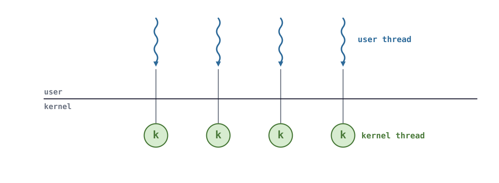</p> --- ### threading **models** | **many-to-one** used (historically) by ruby, ocaml, lua --- ### threading **models** | **many-to-one** <p>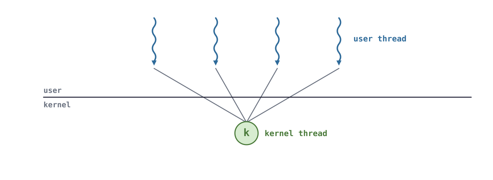</p> --- ### **many-to-one** - you can write your **own** threading library! --- ### **many-to-one** - you can write your **own** threading library! - just a context switch in C/asm --- ### **many-to-one** - you can write your **own** threading library! - just a context switch in C/asm - related ideas today → JavaScript, Rust <scb>async</scb> <br> (different abstractions) --- ### threading **models** | **many-to-many** kernel threads created **on demand** while → **runnable** user threads --- ### threading **models** | **many-to-many** <p>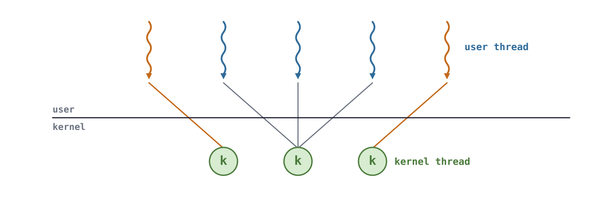</p> --- ### **many-to-many** <div class="multicolumn" style="display: grid; grid-template-columns: 40% 60%; gap: 20px; align-items: center;"> <div> </div> <div> ||| | --- | --- | | **i/o-bound** [**<font color="orange">orange</font>**] | use **whole kernel thread** | </div> </div> <br> --- ### **many-to-many** <div class="multicolumn" style="display: grid; grid-template-columns: 40% 60%; gap: 20px; align-items: center;"> <div> </div> <div> ||| | --- | --- | | **i/o-bound** [**<font color="orange">orange</font>**] | use **whole kernel thread** | | **cpu-bound** [**<font color="blue">blue</font>**] | share **single** kernel thread | || </div> </div> <br> --- ### **many-to-many** <div class="multicolumn" style="display: grid; grid-template-columns: 40% 60%; gap: 20px; align-items: center;"> <div> </div> <div> ||| | --- | --- | | **i/o-bound** [**<font color="orange">orange</font>**] | use **whole kernel thread** | | **cpu-bound** [**<font color="blue">blue</font>**] | share **single** kernel thread | || </div> </div> <br> **goal** → user-thread speed **and** 1:1 blocking/parallelism --- but...what's the **catch**? --- ### **many-to-many** | **cons** - lots of user ↔ kernel **coordination** --- ### **many-to-many** | **cons** - lots of user ↔ kernel **coordination** - **which** user thread runs on **new** kernel thread? --- ### **many-to-many** | **cons** - lots of user ↔ kernel **coordination** - **which** user thread runs on **new** kernel thread? - which **register** context to switch **into**? --- ### **many-to-many** | **cons** - lots of user ↔ kernel **coordination** - **which** user thread runs on **new** kernel thread? - which **register** context to switch **into**? - full of **race conditions** --- ### **many-to-many** | **cons** - lots of user ↔ kernel **coordination** - **which** user thread runs on **new** kernel thread? - which **register** context to switch **into**? - full of **race conditions** - [**Solaris**](https://www.stromasys.com/resources/sun-solaris-operating-system-comprehensive-guide/) implemented it --- ### **many-to-many** | **cons** - lots of user ↔ kernel **coordination** - **which** user thread runs on **new** kernel thread? - which **register** context to switch **into**? - full of **race conditions** - [**Solaris**](https://www.stromasys.com/resources/sun-solaris-operating-system-comprehensive-guide/) implemented it...then **backed out** of it! <br> <br> <center><div class="center" data-id="box" style="height: 75px; width: 710px; background: orange;"> complexity → <b>has a cost!</b> </div></center> --- ### threading models | **comparison** | model | switch cost | blocking I/O | parallelism | |---|---|---|---| --- ### threading models | **comparison** | model | switch cost | blocking I/O | parallelism | |---|---|---|---| | one-to-one | <sc>syscall</sc> + switch | blocks **one** thread | **yes** | --- ### threading models | **comparison** | model | switch cost | blocking I/O | parallelism | |---|---|---|---| | one-to-one | <sc>syscall</sc> + switch | blocks **one** thread | **yes** | | many-to-one | **tiny** | blocks **all** threads | no | --- ### threading models | **comparison** | model | switch cost | blocking I/O | parallelism | |---|---|---|---| | one-to-one | <sc>syscall</sc> + switch | blocks **one** thread | **yes** | | many-to-one | **tiny** | blocks **all** threads | no | | many-to-many | tiny (mostly) | blocks **one** | yes <br> but **complex** | || --- ## design of an **instagram webserver** --- ### instagram webserver - thread reads/writes over **network** --- ### instagram webserver - thread reads/writes over **network** - receives requests from clients for home/wall --- ### instagram webserver - thread reads/writes over **network** - receives requests from clients for home/wall - writes response back (_e.g._ <sc>home html</sc>) --- how does the webserver **compute** response html? --- a **request** arrives from a client <p>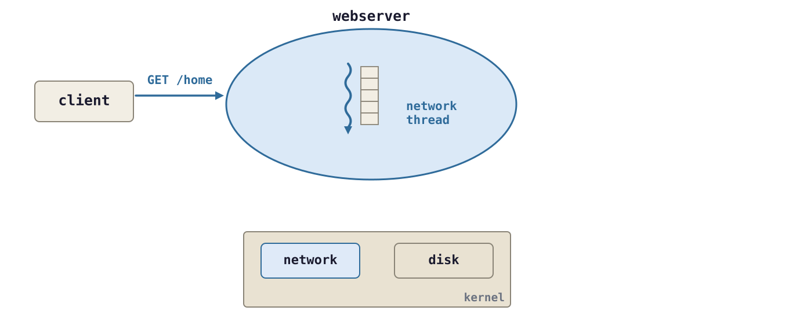</p> --- - must do **blocking disk I/O** - then **format** data <p>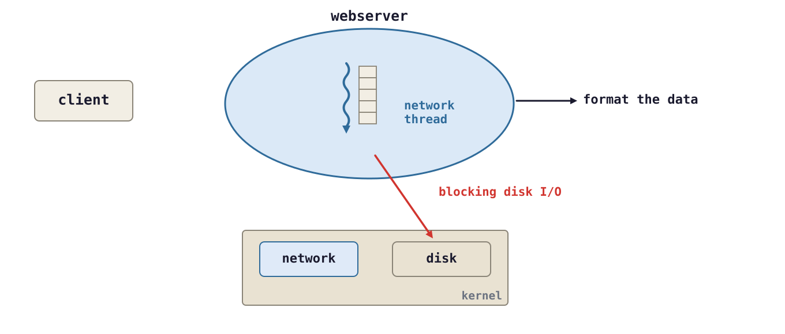</p> --- - hand html to network thread - send it back <p>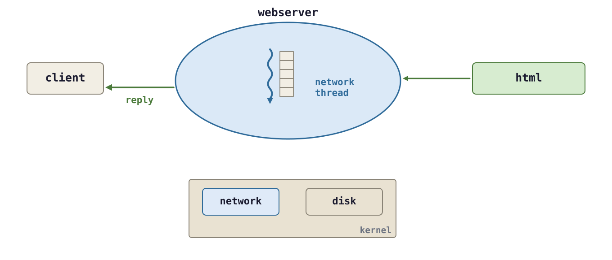</p> --- ### webserver | **goals** --- ### webserver | **goals** | goal | means | |---|---| | **throughput** | max clients served/second <br> **minimize** per-request cost (fewer, cheaper atoms) | --- ### webserver | **goals** | goal | means | |---|---| | **throughput** | max clients served/second <br> **minimize** per-request cost (fewer, cheaper atoms) | | **reliability** | one part fails → does rest fail? <br> **fault isolation** | --- ### webserver | **goals** | goal | means | |---|---| | **throughput** | max clients served/second <br> **minimize** per-request cost (fewer, cheaper atoms) | | **reliability** | one part fails → does rest fail? <br> **fault isolation** | | **parallelism** | does it get faster with more **cores**? | || Note: - reliability also = security: a malicious request that triggers a parsing bug -- what else can it reach? --- ### webserver | **naive approach** a **single** thread does everything <p>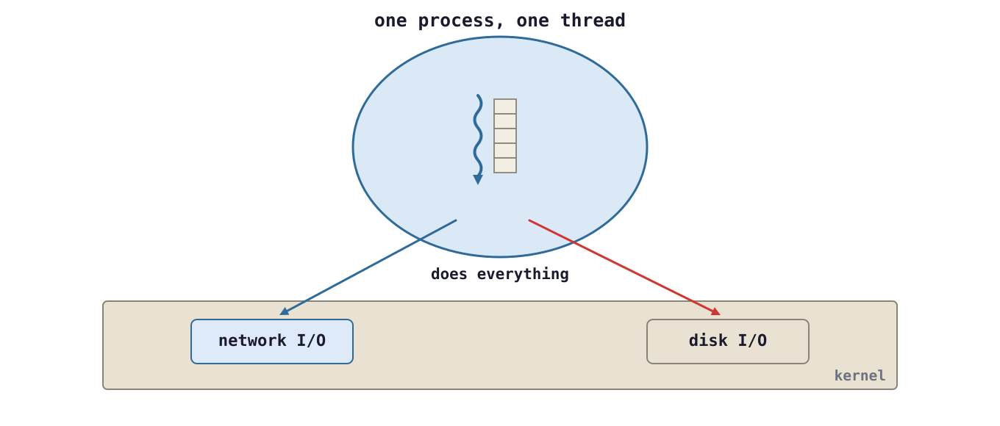</p> --- ### webserver | **naive approach** a **single** thread does everything <div class="multicolumn" style="display: grid; grid-template-columns: 60% 40%; gap: 20px; align-items: center;"> <div> </div> <div> || |----| |**throughput**?| |**reliability**?| |**parallelism**?| || </div> </div> --- ### webserver | multi-**process** server --- ### webserver | multi-**process** server - network process → uses <sc>ipc</sc> --- ### webserver | multi-**process** server - network process → uses <sc>ipc</sc> - to hand requests to **worker** processes --- ### webserver | multi-**process** server - network process → uses <sc>ipc</sc> - to hand requests to **worker** processes <br> <br> <p>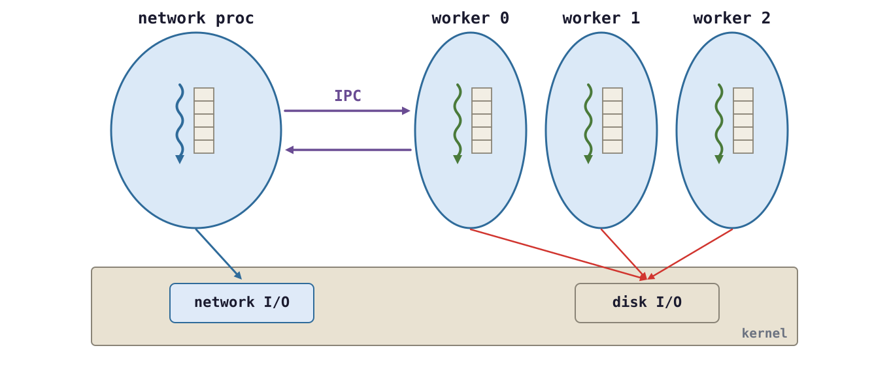</p> --- ### webserver | multi-**process** server - workers **compute** + do **disk I/O** --- ### webserver | multi-**process** server - workers **compute** + do **disk I/O** → results via <sc>ipc</sc> --- ### webserver | multi-**process** server - workers **compute** + do **disk I/O** → results via <sc>ipc</sc> - blocking or non-blocking? --- ### webserver | multi-**process** server - workers **compute** + do **disk I/O** → results via <sc>ipc</sc> - blocking or non-blocking? - <sc>ipc</sc>, network I/O, disk I/O? --- ### webserver | multi-**process** server <div class="multicolumn" style="display: grid; grid-template-columns: 60% 40%; gap: 20px; align-items: center;"> <div> - workers **compute** + do **disk I/O** - blocking or non-blocking? </div> <div> || |----| |**throughput**?| |**reliability**?| |**parallelism**?| || </div> </div> --- ### webserver | multi-**threaded** server --- ### webserver | **multi-threaded server** - network thread → coordinate **worker threads** - **shared memory** --- ### webserver | **multi-threaded server** - network thread → coordinate **worker threads** - **shared memory** <p>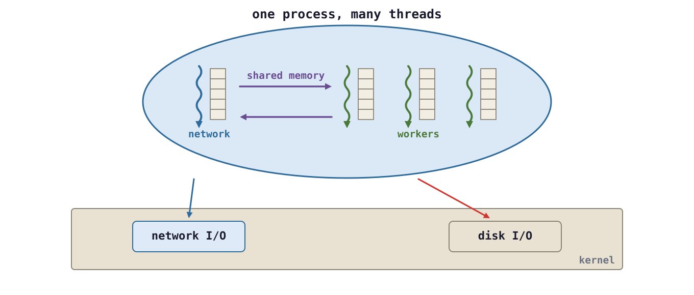</p> --- ### webserver | **multi-threaded server** - thread type? --- ### webserver | **multi-threaded server** - thread type? - **user**/**kernel** threads, **1:1**, **m:1**, **m:n**? --- ### webserver | **multi-threaded server** <div class="multicolumn" style="display: grid; grid-template-columns: 60% 40%; gap: 20px; align-items: center;"> <div> - thread type? - **user**/**kernel** threads, **1:1**, **m:1**, **m:n**? </div> <div> || |----| |**throughput**?| |**reliability**?| |**parallelism**?| || </div> </div> --- so... which approach is **best** for our webserver? --- ### webserver | **one way to answer** --- ### webserver | **one way to answer** | design | throughput | reliability | parallelism | |---|---|---|---| --- ### webserver | **one way to answer** | design | throughput | reliability | parallelism | |---|---|---|---| | single thread | **low** <br> stalls on every disk I/O | **one** crash <br> **all** clients down | none | --- ### webserver | **one way to answer** | design | throughput | reliability | parallelism | |---|---|---|---| | single thread | **low** <br> stalls on every disk I/O | **one** crash <br> **all** clients down | none | | multi-process | good but <sc>ipc</sc> costs <br> [copies, <sc>syscall</sc>s, VAS switches] | **best**, faults isolated | **yes** | --- ### webserver | **one way to answer** | design | throughput | reliability | parallelism | |---|---|---|---| | single thread | **low** <br> stalls on every disk I/O | **one** crash <br> **all** clients down | none | | multi-process | **good** but <sc>ipc</sc> costs <br> [copies, <sc>syscall</sc>s, VAS switches] | **best**, faults isolated | **yes** | | threads (1:1) | **good**, shared memory, cheap switches | **poor**, one bug kills all | **yes** | --- ### webserver | **one way to answer** | design | throughput | reliability | parallelism | |---|---|---|---| | single thread | **low** <br> stalls on every disk I/O | **one** crash <br> **all** clients down | none | | multi-process | **good** but <sc>ipc</sc> costs <br> [copies, <sc>syscall</sc>s, VAS switches] | **best**, faults isolated | **yes** | | threads (1:1) | **good**, shared memory, cheap switches | **poor**, one bug kills all | **yes** | | threads (user) | **fastest switches** <br> but disk I/O blocks **all** | **poor** | none | || --- so...do we now know which one is "best"? --- ### webserver | **best for what?** --- ### webserver | **best for what?** - reliability? - throughput? - parallelism? --- ### webserver | **best for what?** - reliability? - throughput? - parallelism? <br> <br> what about...**simplicity**? --- you know the answer... <br> <center><div class="center" data-id="box" style="height: 75px; width: 335px; background: orange;"> <b>it depends!</b> </div></center> --- ## threads | **summary** --- ### threads | **summary** ||| | --- | --- | | **thread** | registers + stack | --- ### threads | **summary** ||| | --- | --- | | **thread** | registers + stack <br> real unit of execution | --- ### threads | **summary** ||| | --- | --- | | **thread** | registers + stack <br> real unit of execution | | **process** | VAS + one or more threads | --- ### threads | **summary** ||| | --- | --- | | **thread** | registers + stack <br> real unit of execution | | **process** | VAS + one or more threads <br> (sharing everything else) | --- ### threads | **summary** ||| | --- | --- | | **thread** | registers + stack <br> real unit of execution | | **process** | VAS + one or more threads <br> (sharing everything else) | | thread switch <br> (same process) | **no** VAS switch | --- ### threads | **summary** ||| | --- | --- | | **thread** | registers + stack <br> real unit of execution | | **process** | VAS + one or more threads <br> (sharing everything else) | | thread switch <br> (same process) | **no** VAS switch | | **1:1**, **kernel**, **user** threads | trade cost vs. blocking <br> vs. parallelism | --- ### threads | **summary** ||| | --- | --- | | **thread** | registers + stack <br> real unit of execution | | **process** | VAS + one or more threads <br> (sharing everything else) | | thread switch <br> (same process) | **no** VAS switch | | **1:1**, **kernel**, **user** threads | trade cost vs. blocking <br> vs. parallelism | | sharing data | easy... | --- ### threads | **summary** ||| | --- | --- | | **thread** | registers + stack <br> real unit of execution | | **process** | VAS + one or more threads <br> (sharing everything else) | | thread switch <br> (same process) | **no** VAS switch | | **1:1**, **kernel**, **user** threads | trade cost vs. blocking <br> vs. parallelism | | sharing data | easy... <br> **safely** sharing it is not! | || --- **next topic** → synchronization